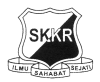
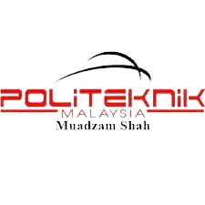

Education :)
1. Sekolah Kebangsaan Kampong Raja

- I start my primary school when I,m 7 years old on 2007 until 2012 and I got so many good memories here with all my friend. I really enjoy my childhood here. I got 3A2B in my UPSR.
Sekolah Kebangsaan Kampong Raja
2. Sekolah Menengah Agama Maarif
3.Politeknik Muadzam Shah

- After SPM I continued my study on Diploma at Politeknik Muadzam shah on diploma in accountancy. My HPNM is 3.40 overall semester.
Politeknik Muadzam Shah
4.Universiti Teknologi Mara Kampus Kota Bharu
- After diploma, I continued my study on degree at UiTM Kota Bharu on Bachelor of Business and Management (Finance) and this is my second year. I will finish my semester on 2025.
UiTM Kota Bharu